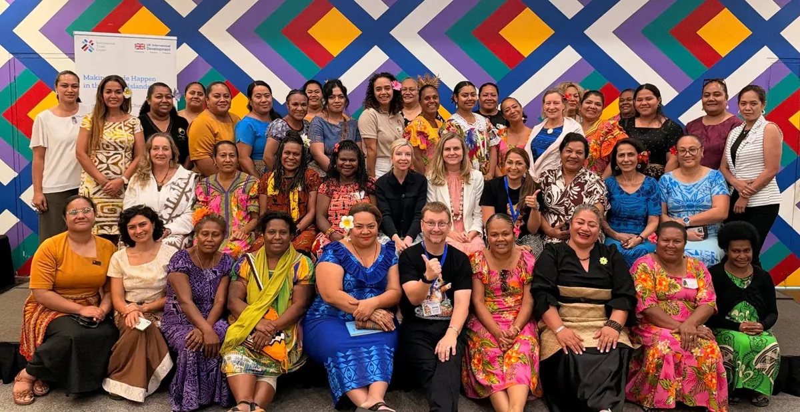
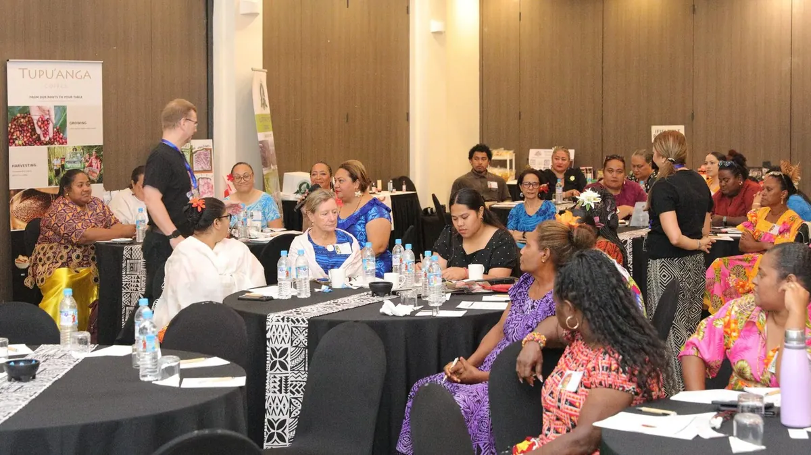

Cybersecurity Awareness
Spot scams and phishing, protect accounts, verify requests, handle sensitive information and make safer everyday decisions.
Practical workshops for small businesses, exporters, trade organisations and communities across Australia and the South Pacific.
Our capacity building workshops help people use everyday digital tools, organise business information, recognise scams and work more effectively online. Each workshop is adapted to the audience, their experience and the tools they already use.

Choose the topics your participants need, covered in one workshop or across a series.
Spot scams and phishing, protect accounts, verify requests, handle sensitive information and make safer everyday decisions.
Build practical foundations in websites, business email, online payments, file organisation and digital records.
Understand what AI can and cannot do, practise accessible tools for everyday tasks and recognise privacy and accuracy risks. No coding required.
Improve everyday workflows, organise information, establish backups and access controls, and identify appropriate automation opportunities.
Trade and development organisations, women-led business networks, chambers of commerce, small and medium businesses, educators, community organisations and programme delivery partners.
Our workshops are designed to be useful for people with mixed levels of digital experience, including those working with limited resources or connectivity.
Plain English, familiar examples and exercises participants can apply in daily work.
Scenarios and tools reflect local businesses, common scams and regional operating conditions.
Sessions can support a conference, business development initiative, community programme or dedicated workshop.

As part of the International Trade Centre’s Pacific Women in Export workshop in Nukuʻalofa, CyberCat delivered a practical session for approximately 50 women business owners and senior executives from Fiji, Papua New Guinea, Samoa, Solomon Islands, Tonga and Vanuatu.
Participants explored digital business foundations, safer online practices, practical tools and introductory AI, with activities linked to everyday business decisions.
Cybersecurity awareness, digital business skills, using AI in everyday business, and digital systems and productivity. Topics can be delivered individually or combined into one practical workshop.
No. Workshops use plain English and familiar examples, and are designed for people with mixed levels of digital experience. The AI sessions require no coding.
Yes. Each workshop is adapted to the audience, their experience and the tools they already use. Sessions can support a conference, business development initiative, community programme or dedicated workshop.
Across Australia and the South Pacific. In 2026 CyberCat delivered the digital business session at the International Trade Centre’s Pacific Women in Export workshop in Tonga.
Tell us about your audience, learning objectives, location and delivery format. We can discuss a practical programme suited to your participants.